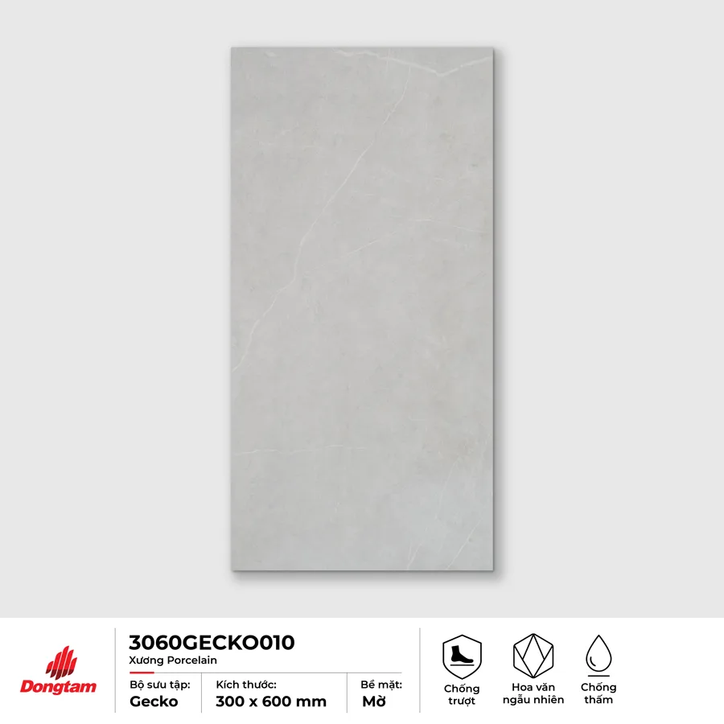
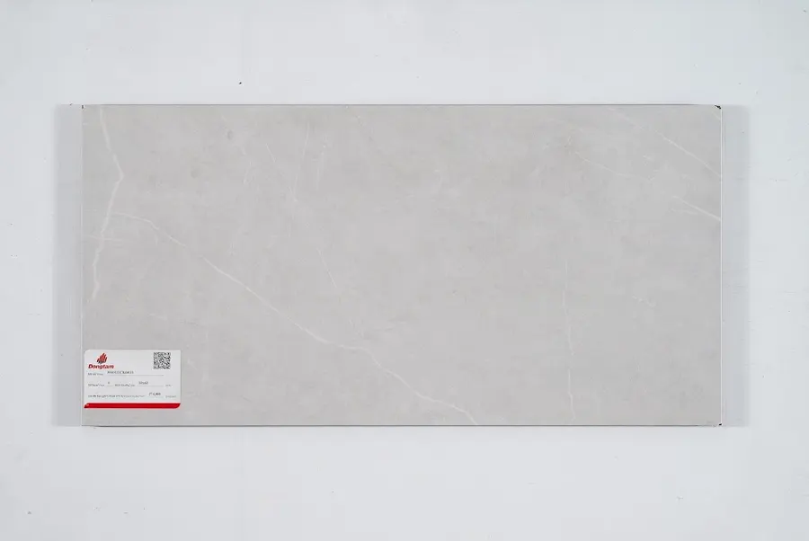
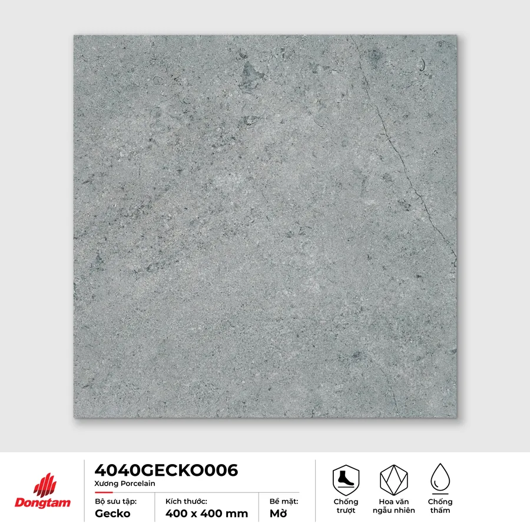
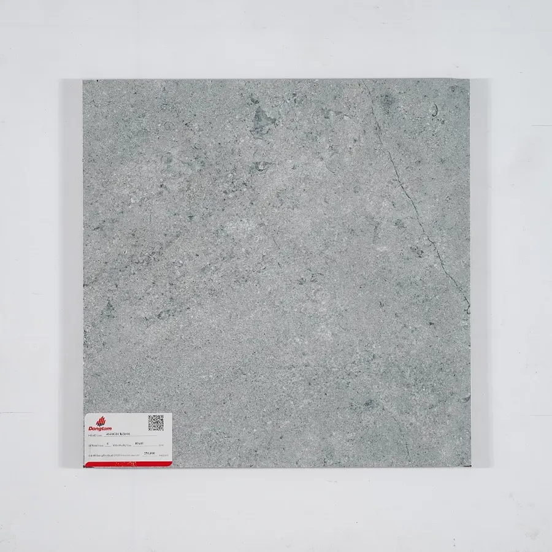
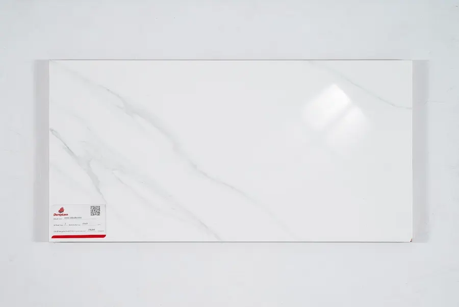

01Vấn đề: nhà tắm là nơi dễ té ngã nhất trong nhà
Nhà tắm nhỏ, lúc nào cũng có nước, lại có xà phòng và dầu gội. Chỉ cần một vệt nước còn đọng là đủ để trượt chân. Người lớn tuổi và trẻ nhỏ là những người dễ gặp nguy hiểm nhất.
Nhiều gia đình gặp cùng một chuyện sau khi ở một thời gian:
- Sàn lát gạch bóng giống phòng khách, tắm xong bước ra là trơn.
- Nước không chảy về phễu thu mà đọng lại ở góc phòng.
- Sàn màu trắng trơn, vài tuần đã thấy ố và ron đen.
Phần lớn lỗi này không nằm ở tay thợ, mà ở lúc chọn gạch. Chọn đúng từ đầu thì sẽ không phải đục lên làm lại.
02Giải pháp: chọn riêng gạch sàn và gạch tường
Sàn và tường nhà tắm làm hai việc khác nhau, nên anh chị đừng chọn chung một loại cho cả hai.
Gạch lát sàn: ưu tiên bám chân và thoát nước
- Bề mặt mờ (men matt): bề mặt mờ có ma sát tốt hơn gạch bóng, chân bước ổn định hơn khi sàn ướt. Đây là điều quan trọng nhất khi chọn gạch sàn nhà tắm.
- Chất gạch Porcelain: gạch Porcelain hút nước dưới 0,5%, nên hợp với nơi tiếp xúc nước hằng ngày.
- Khổ gạch nhỏ, vừa: khổ 30x60 dễ đánh dốc để nước chảy về phễu thu. Nhà tắm nhỏ dưới 5m² có thể dùng khổ 30x30 hoặc 40x40. Viên càng nhỏ thì càng nhiều đường ron, chân càng có chỗ bám.
- Màu sàn: tông xám, nâu nhạt giúp đỡ lộ vết bẩn và vết nước hơn trắng trơn.
- Hoa văn: vân đá nhẹ hoặc gạch trơn, tránh họa tiết rườm rà để dễ lau chùi.
Gạch ốp tường: ưu tiên sáng sủa, dễ lau
- Tường không có người đi lên, nên gạch bóng rất hợp. Vết xà phòng, nước bắn lên tường lau là sạch.
- Màu tường sáng (trắng, xám nhạt, be) giúp nhà tắm sạch sẽ và rộng hơn. Có thể dùng một mảng màu đậm hơn ở khu tắm vòi sen làm điểm nhấn.
- Phối tường sáng, sàn tối là cách đơn giản mà dễ đẹp.
| Sàn nhà tắm | Tường nhà tắm | |
|---|---|---|
| Bề mặt | Mờ (men matt) | Bóng, dễ lau |
| Chất gạch | Porcelain | Ceramic hoặc Porcelain |
| Khổ hay dùng | 30x60, 40x40, 30x30 | 30x60, 40x80 |
| Màu | Xám, nâu nhạt | Trắng, xám nhạt, be |
Dưới đây là hai mẫu mờ dòng GECKO để lát sàn, một mẫu mờ VAMCOTAY tông xám, và một mẫu Ceramic bóng vân đá để ốp tường:


GECKO 01030x60 · 274.000 đ/m²

GECKO 00640x40 · 249.000 đ/m²
 VAMCOTAY 00330x60 · 238.000 đ/m²
VAMCOTAY 00330x60 · 238.000 đ/m²

CARARAS 00130x60 · 258.000 đ/m²Dòng GECKO có tính năng chống trượt theo thông tin của hãng. Khi xem mẫu ở đại lý, anh chị có thể hỏi thêm thông số cụ thể của từng mã.
03Kết quả: nhà tắm khô nhanh, bước chân yên tâm
Lát sàn bằng gạch mờ khổ vừa, có độ dốc về phễu thu, thì nước không đọng lại và chân bước chắc hơn. Tường gạch bóng sáng màu làm nhà tắm sạch và thoáng. Sàn tông xám đỡ phải cọ rửa hằng ngày. Cả nhà, nhất là ông bà và các con, dùng nhà tắm thoải mái hơn.
Vài lưu ý nhỏ khi làm nhà tắm:
- Dặn thợ đánh dốc sàn về phễu thu trước khi lát.
- Chọn ron màu xám hoặc màu tối cho sàn để đỡ lộ vết bẩn.
- Mua đủ gạch cùng số lô cho cả sàn, tránh lệch màu giữa các viên.
Anh chị xem thông tin từng mẫu ở các trang sản phẩm phía trên, rồi nhờ đại lý Đồng Tâm gần nhất báo giá và tư vấn số lượng theo diện tích nhà tắm.
Mẫu gạch được nhắc trong bài
Giá và chương trình thay đổi theo từng thời điểm; đại lý báo giá chính xác và chiết khấu theo công trình. ← Tất cả bài viết
Góp ý của bạn đọc
Bài viết này có giúp ích cho bạn không?
Bạn có thể góp ý qua email: lechilinh.work@gmail.com